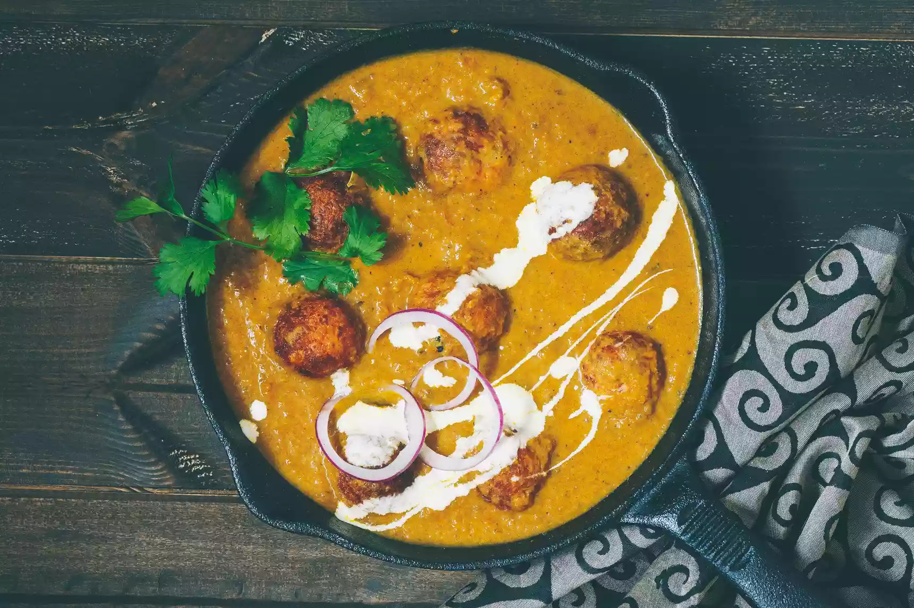
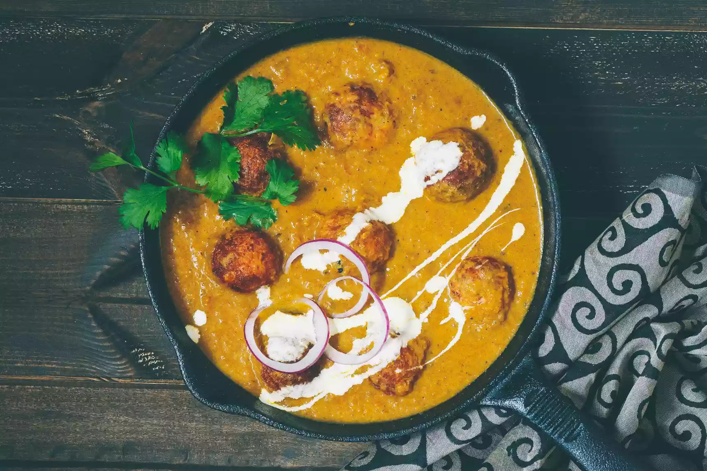

Let's Cook it right
Indian Cuisines
The Cuisine of India is very diverse and is a result of India's diverse population. Over the centuries, each new wave of settlers brought with them their own culinary practices which, over time, blended into the Indian cuisine as it is known today. Punjabi cuisine (from The Punjab region of Northern India) is mainly based upon Wheat, Masalas (spice), pure desi ghee, with liberal amounts of butter and cream. Though wheat varieties form their staple food, Punjabis do cook rice on special occasions. During winter a delicacy, Kheer a very popular dessert is cooked using rice. Within the state itself, there are different preferences. People in the area of Amritsar prefer stuffed parathas and milk products. In fact, the area is well known for quality of its milk products. There are certain dishes which are exclusive to Punjab, such as Maha Di Dal and Saron Da Saag (Sarson Ka Saag). The Punjabi breads are generally flat breads; only a few varieties are raised breads. The breads may be made of different types of flour and can be made in various ways: Baked in the tandoor like naan, tandoori roti, kulcha, lachha paratha Dry baked on the tava (Indian griddle) like phulka or chapati, jowar ki roti, baajre ki roti and the very famous makke ki roti (these are also smeared with ghee or white butter). Shallow fried like paratha, aloo or mooli paratha. Deep fried like puri and bhatoora (a fermented dough) Missi Roti of punjab is delicious. The tandoor also allows for tasty chicken and meat preparations including seekh kebab, tandoori chicken, reshmi tikka and malai tikka. Patiala shahi murg and murg makhani are among the famous Punjabi dishes.
LATEST RECIPES
 
